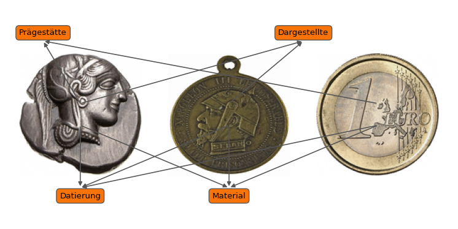

Forschungsdaten
Mattia Celisi ![]()
Was sind numismatische Forschungsdaten?
Forschungsdaten sind zunächst jede Art von digitalen Daten, die wissenschaftlich ausgewertet werden können. Sie sind Grundlage und Ergebnis wissenschaftlicher Arbeit.
Es gibt sehr viele numismatische Daten und mehrere Datenbanken, die über 100.000 Stücke enthalten. Für jede Münze, egal aus welcher Zeit oder Region, gibt es eine fixe Anzahl relevanter Datenfelder. Häufig gehören zu diesen Münzdaten auch Bilder der Averse und Reverse
Alle der folgenden Münzen aus unterschiedlichen Epochen haben beispielsweise das Informationen zu Material, Dargestellten, Prägestätten. Auch wenn die Euromünze keine dargestellte Person hat und die Prägestätte der Münze von Napoleon III. unbekannt ist, kann auch gerade das Nichtvorhandensein dieser Informationen wichtig für die Interpretation der Münzdaten sein.
: Münzen und ihre Datenfelder {#tbl-muenzdaten tbl-colwidths=“[20,10,10,20]”} Links: https://ikmk.smb.museum/object?id=18214977 Mitte: https://nat.museum-digital.de/object/73659 Rechts: https://ikmk.smb.museum/object?id=18203837 ############ TODO: Wie sinnvoll hier zitieren
Dieses Bild wurde nicht händisch in einem Bildbearbeitungsprogramm erstellt. Es wurde direkt in Python programmiert und nutzt die Daten, die direkt aus den Münzdatenbanken kommen. Am Ende dieses und des nächsten Moduls können wir Schaubilder wie das obere mit Münzen aus verschiedenen Datenbanken selbst erstellen.
Wie können wir uns Münzdaten vorstellen
Die einfachste Form, Münzdaten strukturiert zu speichern, ist eine Tabelle. Die Reihen stehen für die einzelne Münze, die Spalten für bestimmte Kategorien, die für die Münze erfasst werden. Das folgende Beispiel zeigt dabei, dass eine Tabelle für Münzdaten nicht ausreicht.
| Name | Gewicht | Durchmesser | Webportal |
|---|---|---|---|
| https://ikmk.smb.museum/object?id=18201393 | 5,10mm | 20g | http://numismatics.org/ocre/id/ric.5.post.29 |
Das Feld Name weißt dabei eindeutig auf den Aureus des Postumus hin, die mit der Objektnummer: 18201393 beim Münzkabinett der Staatlichen Museen Berlin liegt. Diese Münze hat unter anderem ein spezifisches Gewicht und einen spezifischen Durchmesser. Außerdem gibt häufig Literatur zu einzelnen Münzen, so genannte Typenkataloge, die einzelnen Münzserien (Typen) beschreiben. Im vorliegenden Fall ist das der Typ Roman Imperial Coinage Band 5, Postumus, Nummer 29.
Was sind Typenkataloge?
Typenkataloge sind in der Numismatik seit dem 19. Jahrhundert die bevorzugte Art, Münzen zu ordnen. Maßstäbe setzten die British Museum Coinage (BMC) und darauf aufbauend Roman Imperial Coinage (RIC). Diese Bände enthalten alle bekannten Münzen der Zeit und alle für die Münzbestimmung notwendigen Felder. Bei der digitalisierung der Kataloge wurden die Bilder und technischen Daten von Münzen direkt mit dem Eintrag verknüpft, was die Bestimmung erleichtert.
Es ergibt Sinn, die Informationen, die die Münze mit anderen Münzen des gleichen Typs teiltm Münztyp zugeordnet werden, in einer eigenen Tabelle zu speichern. Einerseits kann so die Herkunft der Daten verstanden werden, andererseits können Anpassungen zentral vorgenommen werden. Häufig sind Nutzer einer Datenbank auch an weiterführenden Informationen zu mit den Münzen verknüpften Orten oder Personen interessiert. Auch für diese Informationen sollten eigene Tabellen erstellt werden, damit die Daten zentralisiert verändert werden können. So erhalten die Münzdaten komplexe Vernetzungen.
Übung 2: Mit einer Typreferenz verknüpfte Daten herausfinden
Navigieren Sie in einem neuen Tab zu einem Referenzportal wie CRRO, OCRE oder Pella. Suchen Sie darin nach einem Münztyp und nach einer Münze. Geben sie beide in die folgende Python-Zelle ein und führen Sie sie aus.
TODO kleines GUIDE wo lassen sich Münztypen finden
Wie verändert sich die Tabelle, je nachdem ob Sie eine URL zu einem Münztyp oder zu einer Münze eingegeben haben? Prüfen Sie den jeweiligen Output und überlegen Sie, warum es Sinn ergibt, warum die Daten in den jeweiligen Tabellen gespeichert sind.
Was sind Graphen?
Sobald Münzdaten aus komplexen Verbindungen verschiedener Datenquellen bestehen, eignet sich eine andere Darstellungsform als Tabellen: Graphen. Bei Graphen gibt es nicht die Tabelle “Münzen” oder “Münztypen”, die verschiedene Einträge enthalten. Stattdessen steht die einzelne Münze (über einen eindeutigen Identifikator, siehe forlgender Abschnitt “Normdaten”) im Zentrum. Die Münze ist über beschriftete Pfeile mit den ihr zugeordneten Informationen verbunden. Die Beschriftungen der Pfeile entsprechen dabei den Namen der Tabellenspalten. Das können Sie im folgenden Codebeispiel überprüfen, indem Sie ihre URL aus dem vorigen Beispiel einfügen.
Diese Darstellungsweise erleichtert die Beantwortung von komplexen Fragestellungen
Man nehme die Fragestellung: In einem Münzfund wurden zahlreiche Münzen unterschiedlicher römischer Kaiser gefunden. Uns interessiert, ob diese Münzen eher am Anfang oder am Ende der Regierungszeit der jeweiligen Kaiser geprägt wurden.
Was ist eine Ontologie?
Wenn Daten auf als Graphen dargestellt werden, zeigt sich unmittelbar, welche Elemente durch eine Ontologie standardisiert werden können. „Ontologie“ ist ursprünglich ein Begriff aus der Philosophie. Er stammt aus dem Griechischen und kann mit der „Lehre des Seins“ übersetzt werden. In der Informatik meint der Begriff aber eine solche Systematisierung von Begrifflichkeiten und deren Abhängigkeiten voneinander. Diese Standardisierung ist in der Numismatik bereits weitgehend abgeschlossen. International gültig ist die Nomisma Ontology. Auf diese Weise hat jede Münze unabhängig von der Sprache der Erfasser eine standardisiertes Datenfeld.
Kommen Ihnen die Namen in der Ontologie von Nomisma bekannt vor? Es sind die gleichen Variablennamen, die in der Tabelle und im Graph angezeigt werden.
Die Nomisma Ontology differenziert nach Objekten und Typen, die jeweils andere Datenfelder haben. So werden die Informationen effektiv nur dort gespeichert, wo sie dazu gehören. Die Graphdarstellung hilft auch, die Informationen aus Typenportalen separat zu speichern und mit dem Datensatz zu verknüpfen. die mit der Münze verknüpfte OCRE-ID hat beispielsweise ebenfalls einen Graph.
Was sind Normdaten?
Bei Münzen gibt es also eine Liste an Datenfeldern, die immer vorhanden sind. In den meisten Datenbanken werden diese Datenfelder normiert erfasst. (LINK oder Erklärfenster Normierung / Normdaten) Auch diese sind in der Ontologie von Nomisma hinterlegt. Sie haben den Typ Class, die Prädikate haben den Typ Property und haben immer ein has vor dem Text.